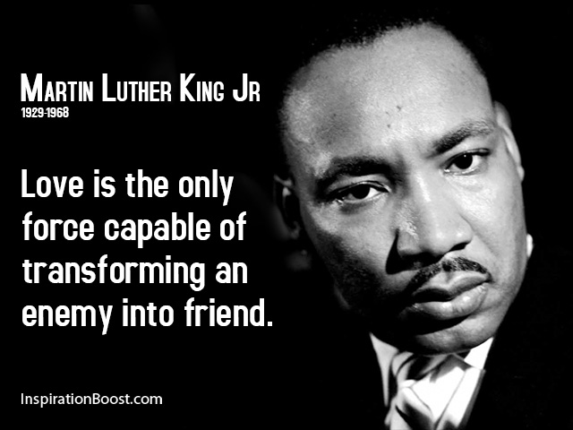
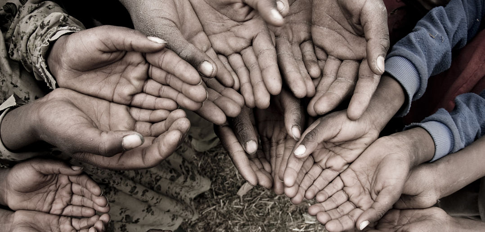

Aniya Patterson For President
Vote For Me So This Country Can Be The Best It Can Be
Why You Should Elect Aniya Patterson For President
Who will be running for president?!
I, Aniya Patterson am running for president as a Democrat. The other candidate's I will be
running against are Donald Trump(Republican) and Hillary Clinton(Democrat).
Rules That I Will Enforce

I will enforce many fair and loyal rules. One of them will be that I will provide lower taxes for the middle and lower classes. I would also lower prices. I believe that food prices and college prices are too high. The second thing I would enforce is to make the econemy better place. Such as the violence. I would mnake gun control more harder to get. I would also make sure that our Law Enforcement are doing their job right and keeping up with there records.
Things That I Personally Believe In

I believe that we are all one. We can help each other out and to not be judge by the color of our skin. I also believe that we can stop the killing and the hatred of America by listening and talking about our problems instead of using weapons to do skin. 
Where The Other 2016 Presidential Candidates Stand on the Issues
I do believe that it is tough out there for a voter—candidates from both parties have a lot to say
about countless topics. So I decided to put up a video so you can see where the other candidate's minds are at.
Let's Stop World Hunger
One of the main reasons why I wanted to be president is to end World Hunger. I want to start more and bigger orginizations to travel to those countries and give the chidldren the food they need like in America.

I would fly planes to Africa and all the other countries that need the food. Even me myself will go to the other countries with my team. I think that world hunger can be fixed.